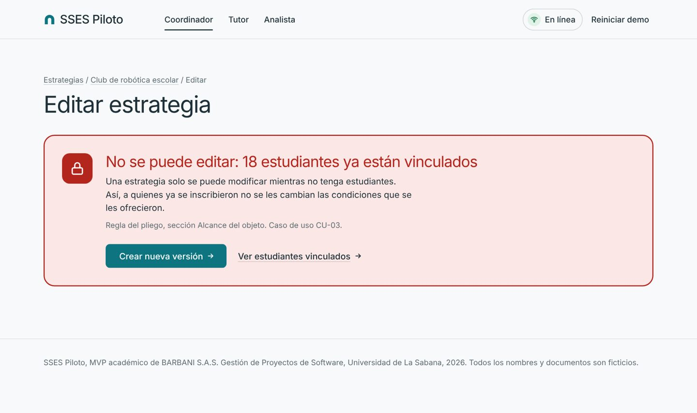
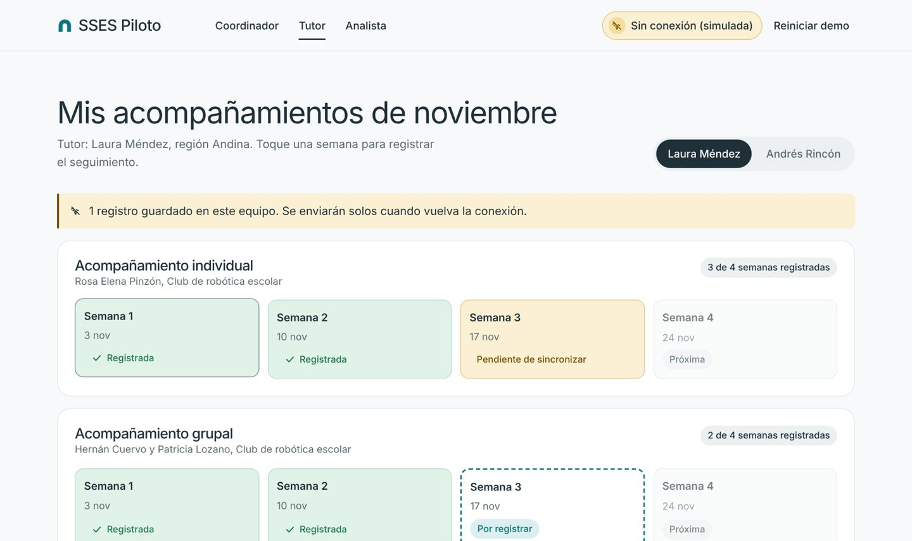
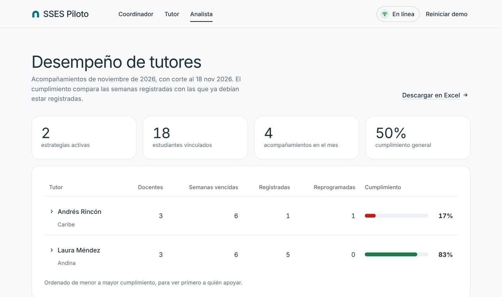

Seguimiento escolar para el MEN
Estrategias, estudiantes y acompañamientos a docentes en un solo lugar, con las reglas del pliego aplicadas solas. Demo con 30 estudiantes ficticios.
estrategias_2026_FINAL_v3 (2).xlsx
| Entidad | Estrategia | Cupo | Inscritos |
|---|---|---|---|
| IE Los Andes | Club de robótica | 20 | 18 |
| I.E. los andes | Robotica escolar | 20 | 6 |
| Colegio Mar Caribe | Semillero lectura | 12 | 15 |
| IE Selva Verde | #REF! |
¿Quién cambió el cupo?
Modificado por: desconocido
El recorrido de la demo de SSES. Tres actores, sin contraseñas.
-
Estrategias del coordinador
El cupo se respeta solo. Con estudiantes vinculados, la estrategia ya no se puede editar.

-
Seguimiento semanal del tutor
Incluso sin internet: el registro se guarda en el equipo y se envía al volver la conexión.

-
Reporte de tutores del analista
Lo que el tutor registró aparece en el cumplimiento al instante, de menor a mayor.
